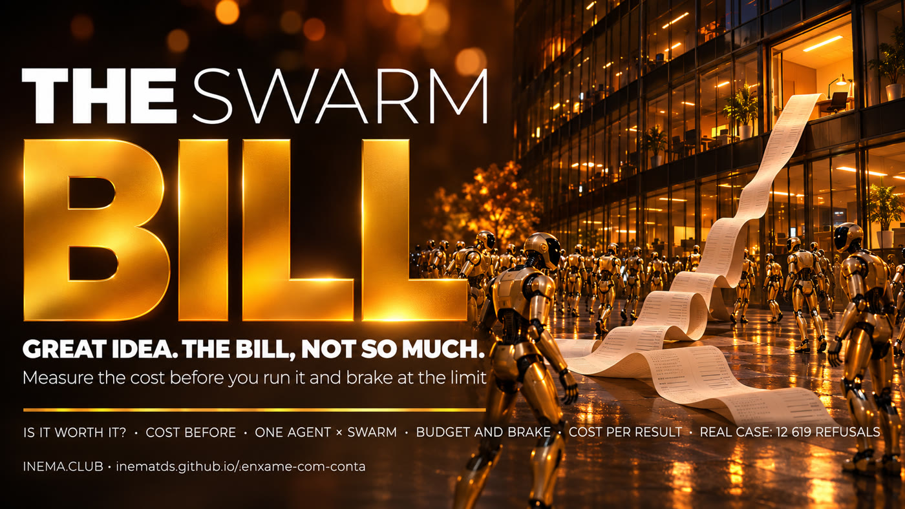
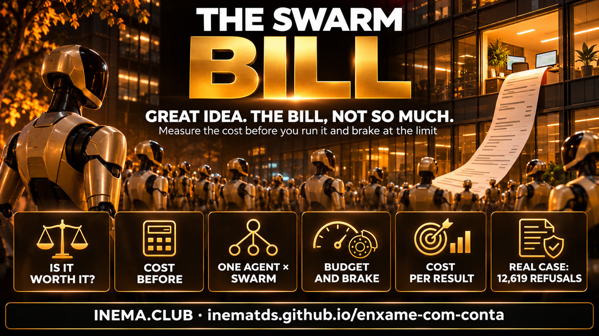

The video shows ten agents working together. It doesn't show the bill. Each agent rereads everything, talks to the others, and redoes what went wrong. You pay for every word. The Cost Sheet, with two free scripts, calculates the cost before you run anything and puts a brake on spending.

An agent swarm is a group of AIs working together on the same task, each handling one part. It works, but costs much more: Anthropic measured about 15 times more text processed than a regular chat. The Cost Sheet is a short worksheet for anyone considering swarms at work: it asks whether the task calls for one, compares the cost with a single agent, and sets a cap and a brake before you run it. The free kit includes the sheet and two Python scripts that calculate costs and limit spending. You only need to read this page to understand it; you need Python 3 to use the kit.

The kit explainer video will appear here once it is published. For now, the sections below explain everything in text.
In a swarm, no one works for free for the others. Each agent gets the full context, reads what its colleagues sent, writes its part, and tries again if something goes wrong. All of that is text going into and out of the model, and that's what you pay for.
Each agent rereads the context (everything it needs to know to do the work) and the task every round. Six agents over three rounds means eighteen reads, not one.
Agents exchange messages. One writes each message, others read it, so it counts twice.
The reviewer reads everything the others delivered. Good idea, but it has a cost too.
Anything sent back for review must be redone, multiplying the cost of the part that failed.
Swarms also have an upside: in the same article, Anthropic's multi-agent system scored 90.2% better than a single agent in its internal evaluation. The question isn't whether a swarm works. It's whether the better result is worth the higher cost.
The kit measures cost per useful result: everything you spent divided by the deliverables someone approved. Rejected runs count toward spending, not toward results.
| Total spent | Approved deliverables | Cost per good deliverable | Average time | |
|---|---|---|---|---|
| Single agent | US$ 1.20 in 3 attempts | 2 of 3 | US$ 0.60 | 17.7 min |
| Swarm | US$ 9.30 in 3 attempts | 3 of 3 | US$ 3.10 | 7 min |
Illustrative numbers from the example included in the kit. Replace them with your task's numbers.
Between November 15 and 16, 2026, an automatic video review scheduler here called the AI directly, with no safeguards. The subscription has a weekly usage limit. Once it ran out, every request was denied, but the process kept asking.
usage limit denials in about 34 hours, around 400 per hour.
with no video reviews at all. Useful work stopped, and no one noticed.
of useless logs on disk, across 13 thousand sessions that did nothing.
in money: denied requests aren't charged. The loss was time and stalled work.
The sheet is a text file you copy into the task folder and fill out. If you can't answer the first part, don't build the swarm.
You don't need this section to understand what came before.
Python 3 and the standard library. No packages to install, no API key: the scripts don't call any model. They only calculate and decide whether your command runs.
The four parts above, as a checklist to mark and fill out.
estimar calculates the swarm's tokens and cost compared with a single agent, based on a plan. comparar reads the real runs and gives you the cost per useful result and the verdict.
A brake for any agent call (claude -p, codex exec, or your own script): it stops at the first limit, caps calls, and stops after N consecutive failures. Multiple processes can share the same state file.
🧠 you decide · ⚙️ the kit script calculates · 🤖 your agent works, always through the brake.
Just Python 3 and the downloaded kit. The brake uses the system's file locking (fcntl), so it runs on Linux and macOS. On Windows, use WSL.
Clone the repository and enter the folder.
git clone https://github.com/inematds/enxame-com-conta cd enxame-com-conta
All 15 tests should pass.
python3 -m unittest discover -s tests -v Ran 15 tests ... OK
The outputs below are real outputs from the scripts running the kit examples. The example numbers are illustrative.
Copy the sheet into the task folder. If fewer than two boxes are checked in part 1, use a single agent and stop here.
mkdir -p minha-tarefa cp FICHA-CONTA.md minha-tarefa/
Copy the example and replace the numbers with your task's numbers. Sizes are in tokens.
cp exemplos/plano-enxame.json plano.json
agentes: how many agents in the swarm (6)rodadas: how many rounds each one runs (3)contexto: what each agent reads every round (20000)tarefa: the request itself (2000)saida_por_agente: what each agent writes per round (3000)mensagens_por_rodada, tamanho_mensagem: talk between agents (2 and 1500)revisores: how many check everything (1)retrabalho: fraction redone, from 0 to 1 (0.3)um_agente: the same work done by a single agent: rounds and output (4 and 8000)preco: US$ per million tokens, input and output (3.0 and 15.0)You'll see the cost both ways, how many times more the swarm costs, and where the money goes (in %). Below is the output with the example numbers, unchanged.
python3 conta.py estimar plano.json "enxame": {"entrada": 712400, "saida": 85800, "custo": 3.4242} "um_agente": {"entrada": 88000, "saida": 8000, "custo": 0.384} "multiplicador_tokens": 8.3 "onde_vai": {"trabalho": 63.1, "coordenacao": 8.6, "revisao": 5.1, "retrabalho": 23.1}
The cost model is deliberately simple: it helps compare architectures, not predict the bill to the cent. The real cost comes from step 7.
In part 3 of the sheet, set the maximum number of agents, calls, and consecutive failures. Those numbers become the brake's options.
All calls for the task use the same state file. If you hit the limit (429, “rate limit,” “hit your limit”…), it blocks everyone for --pausa-min minutes (default 60).
python3 trava.py rodar \ --estado .trava.json \ --max-chamadas 40 \ --max-falhas 3 \ -- claude -p "…" # exit codes: 75 = blocked by a limit (nothing was called) # 76 = call budget used up # 77 = too many failures in a row
When it blocks, it shows this message:
[trava] limite detectado: bloqueada por 60 min para todos que usam .trava.json.
[trava] bloqueada (limite de uso); libera em 59 min. Nada foi chamado.
status shows calls, failures, and recent events. liberar clears the block after you have checked what happened. Both use .trava.json by default; if you used another file in step 5, pass the same --estado.
python3 trava.py status {"chamadas": 1, "falhas_seguidas": 0, "bloqueada_ate": 0, "motivo": "", "ultimos": [{"rc": 0, "evento": "ok", …}]} python3 trava.py liberar # --zerar-chamadas also resets the counter
For the same task, with a single agent and with the swarm, record: arquitetura, custo, aprovada, retrabalho, minutos.
cp exemplos/execucoes.json execucoes.json
arquitetura: um_agente (single agent) or enxame (swarm), only these two valuescusto: what that run costaprovada: true if someone approved the delivery, false if notretrabalho: fraction redone, from 0 to 1minutos: how long it tookThen run it on your file. Below, the output for the example:
python3 conta.py comparar execucoes.json "um_agente": {"aprovadas": 2, "custo_total": 1.2, "cru": 0.6, "minutos_medio": 17.7} "enxame": {"aprovadas": 3, "custo_total": 9.3, "cru": 3.1, "minutos_medio": 7.0} "veredito": "o enxame custa 5.2× mais por entrega aprovada e acerta 1.5× mais: só vale se cada entrega aprovada valer mais que 5.2× o custo de um agente só (mas foi 2.5× mais rápido: decida se o prazo vale isso)"
cru is the cost per useful result. The final decision is yours: keep the swarm only if the extra result or the time saved is worth the extra cost.
The kit grows with real cases.
The Cost Sheet, scripts, and real case are free on inema.club, right on the web.
INEMA.CLUB